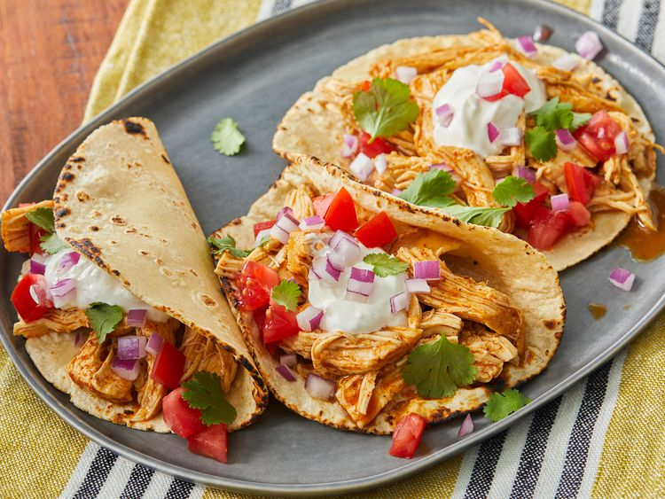

Chicken Tacos Recipe

Description
These easy slow cooker chicken tacos are easy to make with just 3 ingredients in your crockpot. Spoon the filling into warm tortillas for a very tasty meal any day of the week.
Ingredients
- 1 cup chicken broth
- 3 tablespoons taco seasoning mix
- 1 pound skinless, boneless chicken breasts
- tortillas
- shredded lettuce (optional)
- chopped tomatoes (optional)
- thinly sliced red onions (optional)